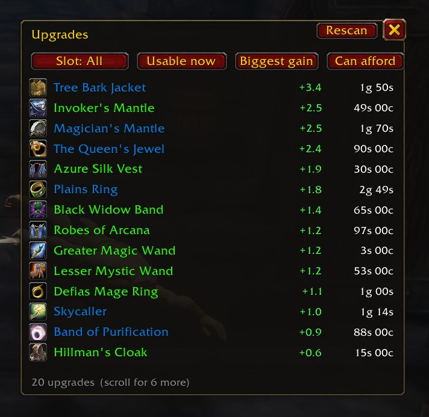

1Omni
One search box over everything you have and everywhere you go. Type a few letters; press Enter.
Filters: i: items, p: places, @ people, s: spells, n: NPCs, q: quests.
2LootValue
One line on each item tooltip: vendor it, sell it on the AH, or disenchant it. Priced from your Auctionator scan.
It compares the AH price (after the cut, and the deposit you lose if it doesn't sell) with the vendor price and disenchanting, and says when the market looks slow. Scan now and then so the prices stay fresh.
3UpgradeFinder
The gear upgrades you can buy: items in your Auctionator scan and your bags that beat what you wear, biggest gain first.
It works for any class, with simple leveling weights for your spec. Pick a slot, usable now or soon, gain or gain per gold, and what you can afford. With Questie it also says where to get an item: a quest reward, a dungeon, a vendor or a drop.

What Omni finds
- Items in your bags, bank and mail, and in your Auctionator scan. Enter links it; at the AH it searches.
- Places: every zone, city and dungeon. Enter opens the map.
- People: friends, guild, group, recent whispers. Enter whispers, Shift+Enter invites.
- Spells: Enter puts the spell on your cursor.
- NPCs and quests with Questie: Enter pins them on the map.
i: items, p: places, @ people, s: spells, n: NPCs, q: quests. Or type /omni.How LootValue decides
Install, step by step
- Install Auctionator (CurseForge or WowUp).
- Download update.cmd and double-click it. It finds your
_forever_folder, or asks once. - Quit WoW fully and start it again (
/reloaddoesn't find new addons). Check they are on in the AddOns list.
Windows warns me about the file
Omni, LootValue and UpgradeFinder folders in Interface\AddOns.
It also keeps two small files in %LOCALAPPDATA%\wow-addons (your WoW folder and what it installed),
and uses a short-lived wow-addons-staging-… folder in your WoW folder while it works.Install by hand
_forever_\Interface\AddOns\ so you get AddOns\Omni\Omni.toc. The code is on
GitHub.